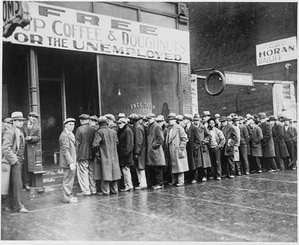

Citizens and Government
Dr. Christopher N. Lawrence
Middle Georgia State University
POLS 1101: American Government
🔊 Disable Narration
Popular Demands on Government
Americans historically have been skeptical of government power, particularly giving power to politicians.
However, in times of crisis, Americans have asked the government to take on more responsibilities:
- The Great Depression
- The 9/11 Attacks
- The 2008–09 Economic Crisis
Yet Greater Distrust of Government
Despite asking politicians to “do something” to solve society's problems, Americans are increasingly distrustful of government power.
The public's trust in government has declined sharply over the past 50 years.
In addition, peoples' sense of political efficacy—the belief that they can affect what the government does—has declined over the last 50 years.
Many scholars think these trends are dangerous to American democracy.
Political Knowledge and Citizenship

Being an engaged citizen requires knowledge about the workings of the political system.
The Internet has created new opportunities for citizens to engage in political activity and influence government—but people have to take advantage of these opportunities.
More knowledgeable citizens have more political efficacy and greater trust in government.
What is Government?

A government is the set of institutions and processes that decide and implement decisions on behalf of a particular polity (a given territory or people).
Within the United States, there are many levels of government that exercise authority over communities (such as cities and counties), states, and territories, as well as our national government.
Forms of Government
Many governments today, and most throughout history, are based on an authoritarian system, where the ruler or ruling class has few constraints on their power but allow ordinary individuals some degree of personal freedom.
In the 20th century, technology made totalitarian rule possible; Nazi Germany and North Korea are good examples, where government seeks to control all aspects of citizens' lives.
On the other hand, in democracies, the people have a significant role in politics and government.
This role is often guaranteed through constitutional government, a system that places limitations on the powers of government and politicians.
The State of Nature
Enlightenment-era philosophers such as Thomas Hobbes, John Locke, and Jean-Jacques Rousseau had competing beliefs about society before (or without) government:
- Hobbes famously believed life for most people would be “nasty, brutish, and short” until humans banded together to create governments to protect them from others.
- Locke and Rousseau believed human nature was more peaceful and benevolent than Hobbes did, and that people did not give up their rights when they formed governments.

The Social Contract
Regardless of why humans chose to form governments, all of the social contract theorists believed that people within a society have agreed to accept certain duties and responsibilities in exchange for their government doing the same.
In our society, the primary obligation of the people is to obey the law. In return, our government protects our fundamental rights and liberties and provides public goods.
What is Politics?
There is no single definition of politics, but two have proven to be enduring:
- 20th century political scientist Harold Lasswell: Politics is about “who gets what, when, and how.”
- Another political scientist, David Easton: “the authoritative allocation of values for a society.”

What is Political Science?
Modern political scientists apply the methods of the social sciences to the systematic study of the theory and practice of politics.
- Political science's roots are interdisciplinary, encompassing philosophy, history, law, and economics.
- Other contemporary social sciences include economics, geography, psychology, and sociology.
Direct vs. Representative Democracy
At the time of the American revolution, many leaders were deeply skeptical of unchecked democracy, which they believed would lead to “King Numbers” and tyranny of the majority.
Even today, America relies mostly on representative democracy: citizens choose leaders to govern on their behalf between elections.
Direct democracy, including the referendum and initiative, tends to be used more frequently at the state and local level, but not at the national level.
The American Identity
What does it mean to be an American? The answer to this question has changed over time as our nation's population has grown and become more diverse in its origins.
Throughout American history, immigration and the demographic changes that come with it have led to political debate:
- The slave trade before 1808.
- Catholic European immigration in the mid/late 1800s.
- Asian immigration in the late 1800s.
- Immigration from the developing world since World War II.
Founding Ideas
More so than race or ethnicity or religion, American identity is based on fundamental ideas or values:
- Liberty
- Equality
- Democracy
Liberty: Freedom!
The American ideal of liberty rests on freedom from government control of our personal and economic lives.
The idea of limited government reflects a concern for liberty.
How absolute should our personal liberty be? Today it is expansive but certainly not unlimited.
Similarly, most Americans today reject unbridled, laissez-faire capitalism and favor some regulation of the economy, but still prefer capitalism and the private sector more than people in most other countries.
Equality: Fair Treatment under the Law
Equality to Americans has multiple components:
Equality of opportunity: the right to succeed or fail on one's own merits.
Political equality: all people have an equal standing to participate in politics and government.
However, government efforts to ensure greater equality of outcomes (social and economic equality) are much more politically controversial.
Democracy: Popular Sovereignty
Americans also believe that they should choose our rulers and have influence over their decisions.
Ultimately, our system is based on the idea that all government power comes from the citizenry itself, known as popular sovereignty.
Most Americans believe strongly in majority rule; however, this is balanced by our system against minority rights.
Copyright and License
The text and narration of these slides are an original, creative work, Copyright © 2000–15 Christopher N. Lawrence. You may freely use, modify, and redistribute this slideshow under the terms of the Creative Commons Attribution-Share Alike 4.0 International license. To view a copy of this license, visit http://creativecommons.org/licenses/by-sa/4.0/ or send a letter to Creative Commons, 444 Castro Street, Suite 900, Mountain View, California, 94041, USA.
Other elements of these slides are either in the public domain (either originally or due to lapse in copyright), are U.S. government works not subject to copyright, or were licensed under the Creative Commons Attribution-Share Alike license (or a less restrictive license, the Creative Commons Attribution license) by their original creator.
Works Consulted
The following sources were consulted or used in the production of one or more of these slideshows, in addition to various primary source materials generally cited in-place or otherwise obvious from context throughout; previous editions of these works may have also been used. Any errors or omissions remain the sole responsibility of the author.
- Barbour, Christine and Gerald C. Wright. 2012. Keeping the Republic: Power and Citizenship in American Politics, Brief 4th Edition. Washington: CQ Press.
- Coleman, John J., Kenneth M. Goldstein, and William G. Howell. 2012. Cause and Consequence in American Politics. New York: Longman Pearson.
- Fiorina, Morris P., Paul E. Peterson, Bertram D. Johnson, and William G. Mayer. 2011. America's New Democracy, 6th Edition. New York: Longman Pearson.
- Ginsberg, Benjamin, et al. 2015. We The People, 10th Essentials Edition. New York: W.W. Norton.
- Lenz, Timothy O. and Mirya Holman. 2013. American Government. Gainesville, Fla.: University Press of Florida.
- O'Connor, Karen, Larry J. Sabato, and Alixandra B. Yanus. 2013. American Government: Roots and Reform, 12th Edition. New York: Pearson.
- Sidlow, Edward I. and Beth Henschen. 2013. GOVT, 4th Edition. New York: Cengage Learning.
- The American National Election Studies.
- Various Wikimedia projects, including the Wikimedia Commons, Wikipedia, and Wikisource.